Curved motion without tangent spikes: sub-frame shutter integration vs linear velocity blur FAQ
Understand in 3 minutes why screen-space velocity blur turns spinning wheels into tangent spikes, and reproduce a zero-overshoot sub-frame shutter bench in 10 minutes.
中文 · Interactive Demo · Measured 7-Card Report
① 📌 Executive Summary
- An instantaneous velocity vector knows the tangent direction right now, not how the path curves a millisecond later. Extrapolating a single linear velocity vector $\mathbf{v}(t)$ across a finite shutter interval $[t - \Delta t/2, t + \Delta t/2]$ shoots exposure samples off the circular perimeter along a straight tangent line.
- Sub-frame curved-arc integration preserves the exact rotor radius. At
24 fps,270°shutter angle, and18 rad/s, the shutter stays open for31.25 ms(sweeping0.5625 rad). Sampling 9 sub-frame taps across 4 blades retains a maximum radial error of8.88e-16scene units across 61 sampled frames, whereas the linear tangent baseline overshoots theR = 2.2perimeter by0.0854scene units at the shutter endpoints. - Incremental complex phasor stepping avoids redundant per-tap trigonometry. Stepping across uniform sub-frame taps via complex rotation $(\cos\delta, \sin\delta)$ agrees with per-tap
Math.cos/sincalls within1.60e-14scene units while lowering median CPU solve time for 8192 9-tap exposures from42.74 msto24.28 ms. - 64-solid optical chopper rig, 13 local acceptance checks. Scene geometry is
synthetic; sub-frame trajectory conformance and Node CPU timings aremeasured;MoBGS/SplineGSneural motion deblurring and rolling-shutter sensor noise arenot_measured.

Daily capability direction check: AAAI 2026 paper MoBGS: Motion Deblurring Dynamic 3D Gaussian Splatting for Blurry Monocular Video (arXiv:2504.15122, v4 updated 2025-12-03) and CVPR 2025 paper SplineGS: Robust Motion-Adaptive Spline for Real-Time Dynamic 3D Gaussians from Monocular Video (arXiv:2412.09982) model continuous sub-frame exposure trajectories (via Neural ODEs and cubic Hermite splines) because linear frame-to-frame approximation breaks down under fast curved motion. Verified 2026-11-10; this demo implements deterministic sub-frame arc integration and phasor stepping without running neural training or deblurring inference.
② 🎯 Architect & Client Q&A
Q1 When should we choose neural dynamic 3DGS / video models vs deterministic sub-frame shutter integration?
Evaluate exposure-aware dynamic 3DGS models (MoBGS, SplineGS) when your input is an already motion-blurred monocular video and you need to reconstruct sharp novel views or recover unknown camera/object trajectories.
Choose deterministic sub-frame trajectory integration when authoring controllable 3D/browser animations of rotating machinery, turbines, propellers, orbital cameras, or technical explainers where the parametric motion curve is known and silhouette fidelity is mandatory.
Q2 Under what constraints is sub-frame trajectory sampling strictly superior to linear velocity buffers?
Whenever angular displacement across the shutter window is non-negligible ($\Delta\theta = \omega \Delta t_s > 0.15\text{ rad}$), first-order linear velocity smearing (p(t) + u * dt * v(t)) violates circular geometry.
Screen-space velocity buffers are fast for small translational camera pans, but on spinning rotors, swinging robot links, or fast orbital cameras, only evaluating the curved trajectory across sub-frame timestamps keeps every exposure tap on the true manifold.
Q3 How does the pipeline preserve circular silhouettes while avoiding per-tap trig overhead?
Consider a blade tip at radius $R = 2.2$ and center angle $\theta_0$. Linear velocity smearing places the shutter endpoints ($u = \pm 0.5$) at $(R\cos\theta_0 \mp \frac{\Delta\theta}{2} R\sin\theta_0, R\sin\theta_0 \pm \frac{\Delta\theta}{2} R\cos\theta_0)$. By the Pythagorean theorem, the endpoint radius becomes $R\sqrt{1 + (\Delta\theta/2)^2}$. For $\Delta\theta = 0.5625\text{ rad}$, $2.2 \times (\sqrt{1 + 0.28125^2} - 1) = 0.085356$ scene units of outward radial spike.
To keep all 9 taps on the circle of radius $R = 2.2$, we compute $(\cos\theta_{\text{start}}, \sin\theta_{\text{start}})$ once at $\theta_{\text{start}} = \theta_0 - \Delta\theta/2$ and advance each subsequent tap by $\delta = \Delta\theta / (N-1)$ using complex phasor multiplication:
$$x_{k+1} = x_k \cos\delta - y_k \sin\delta, \quad y_{k+1} = x_k \sin\delta + y_k \cos\delta$$
Every tap remains at exact radius $R = 2.2$, and per-tap trigonometric calls are replaced by two multiplies and one add per coordinate.
Q4 How can I reproduce this in 10 minutes?
- Run
npm run devand open/demos/shutter-exposure-wheel/, initialized at0.40 s,270°shutter angle, and18 rad/s. - In
curved-arcmode, verify that all 9 sub-frame tap spheres per blade sit flush inside theR = 2.2perimeter calibration ticks (max radial error 0.00000 u). - Switch to
tangent-smearmode: observe the orange endpoint taps shooting outward past the rotor rim by0.0854 u. - Adjust Speed (
2–36 rad/s), Shutter angle (45°–360°), and FPS (12–120); enter an invalid shutter angle like540°to verify atomic rejection and state retention. - Click
Export exposureto downloadSHUTTER_EXPOSURE_ARC.jsoncontaining the 9-tap sub-frame coordinates and world matrices. - Run
npx vitest run tests/shutter-exposure.test.ts, then build and runnode scripts/benchmark-shutter-exposure.mjsagainst a port 4335 preview server.
③ 🧭 Visual Diagrams
④ 📊 Architect Decision Matrix
| Criterion | Instantaneous Unblurred Slice | Linear Velocity Buffer (tangent-smear) |
Sub-Frame Curved-Arc Phasor (curved-arc) |
Exposure-Trajectory 3DGS (MoBGS / SplineGS) |
|---|---|---|---|---|
| Radial silhouette error on spinning rotor | 0 (suffers from wagon-wheel aliasing) |
Overshoots rim by 0.0854 scene units at 270° |
Measured 8.88e-16 scene units (floating-point zero) |
Fits continuous spline/ODE to blurry input frames |
Rotary shutter angle semantics (45°–360°) |
No exposure interval | Larger shutter angles worsen tangent spikes | Exact circular arc $\Delta\theta = \omega \frac{\phi}{360 f}$ | Used for inverse deblurring of recorded video |
| 8192 × 9-tap Node CPU solve median | Single tap only | Linear MAD (with distorted silhouette) | Incremental phasor 24.28 ms vs per-tap trig 42.74 ms |
Requires GPU optimization & neural rendering |
| Arbitrary timeline seeking / reversal | Deterministic | Deterministic (with radial distortion) | Exact forward/reverse world matrix equality | Depends on trained scene representation |
| Best architectural role | Static CAD inspection | Slow translational camera motion blur | High-speed rotary explainers & camera shutter demos | Deblurring casual handheld monocular videos |
Quantitative example: With radius $R = 2.2$, angular speed $\omega = 18\text{ rad/s}$, frame rate $f = 24\text{ fps}$, and shutter angle $\phi = 270^\circ$, exposure duration is $\Delta t_s = \frac{270}{360 \times 24} = 0.03125\text{ s}$ and swept angle is $\Delta\theta = 0.5625\text{ rad}$ ($32.23^\circ$). Linear tangent extrapolation places the shutter endpoints at radius $2.2 \times \sqrt{1 + 0.28125^2} = 2.285356$, producing an outward radial error of 0.085356 scene units.
⑤ 🧪 New Capability Demo & Benchmark Findings (with 7-Card)
Sealed data records 64 3D solids, 61 sampled timestamps (4 blades × 9 sub-frame taps = 36 tap positions per frame), and solver equivalence between incremental complex phasor stepping and per-tap trigonometric evaluation. Maximum tap coordinate difference across all tiers is 1.60e-14 scene units (threshold < 1e-12).
| Node CPU 9-Tap Exposure Queries | Incremental Phasor Step Median | Per-Tap Trig Calls Median |
|---|---|---|
| 128 | 0.53 ms | 1.28 ms |
| 1024 | 2.80 ms | 5.58 ms |
| 8192 | 24.28 ms | 42.74 ms |
Each load tier runs 7 alternating repetitions after warmup on Node CPU (excluding WebGL rendering). At 8192 9-tap exposures, incremental complex phasor rotation is 1.76× faster than per-tap Math.cos/sin calls while eliminating the 0.0854-unit radial tangent overshoot.
Measured 7-Card Report (EN) · 中文七卡. Scene geometry is synthetic, local trajectory checks and CPU timings are measured, and MoBGS / SplineGS neural inference, optical flow, and CMOS rolling-shutter distortion are not_measured.
⑥ 🛠️ Architect Checklist
- Check angular displacement across the shutter window ($\Delta\theta = \omega\Delta t_s$); never use linear tangent smearing when $\Delta\theta > 0.15\text{ rad}$.
- Convert rotary shutter angle $\phi \in [45^\circ, 360^\circ]$ and frame rate $f$ explicitly into exposure duration $\Delta t_s = \frac{\phi}{360 f}$.
- Sample sub-frame taps symmetrically across $[t - \Delta t_s/2, t + \Delta t_s/2]$ along the true curved trajectory.
- Verify that every sub-frame tap on a circular rotor preserves radius $\sqrt{x_k^2 + y_k^2} = R$ within
< 1e-12. - Use incremental complex phasor rotation $(\cos\delta, \sin\delta)$ for uniform angular taps and cross-check against direct trigonometry.
- Validate angular speed, shutter angle, and FPS bounds and reject invalid configs (
540°shutter) atomically. - Verify that forward and reverse timestamp scrubbing produce identical sub-frame tap world matrices.
- Distinguish forward sub-frame exposure synthesis from inverse blurry video reconstruction (
MoBGS). - Separate Node CPU sub-frame trajectory computation timings from browser GPU rendering metrics.
- Label unexecuted neural deblurring models, rolling-shutter readout, and sensor noise explicitly as
not_measured.
Primary sources: MoBGS (arXiv:2504.15122) (AAAI 2026, v4 updated 2025-12-03) models continuous latent camera and object trajectories during shutter exposure via a blur-adaptive Neural ODE; SplineGS (arXiv:2412.09982) (CVPR 2025) represents continuous dynamic 3D Gaussian trajectories with motion-adaptive cubic Hermite splines. Verified 2026-11-10; this demo is an original deterministic sub-frame shutter workbench and does not run those neural models.